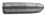

25. BÖLÜM
Bir insandan ne kadar büyük bir şey istersen, yerine getirmesi şansın o kadar azalır demişti bir zamanlar, dediğine güvendiğim bir arkadaşım. Büyük değişiklikler, büyük fedakârlıklardan korkar insanlar. Küçükten başla.
“Bir kahve rica edebilir miyim,” dedim. “Lütfen sade olsun, şeker de istemem.”
“Hemen,” dedi cam kafesin bekçisi. Bir şey daha söyleyecekmiş gibi durdu, sonra geri geri yürüdü. Kapının aralığından görünmez oldu.
Sandalyemde arkaya doğru kaykıldım. Bilirdi bu işleri arkadaşım. Reklamcıydı. Kendisi için de büyük değişiklikler istemişti. Kendisinden beklenmeyen şeyler yapmıştı. Şimdi kim bilir nerelerdeydi? Yürüyen bir toplantı odasında yaptığını yüzüne vurmuş, çekip gitmiştim hayatından. Yaptığını hiç affetmemiştim, beni affedip etmediğini bilmiyordum. Etmiştir umarım dedim kendi kendime.
Gözlerim İsmet Günaldı’nın kapalı kapısında, dışarıyı dinledim. Deminkine göre daha sakindi. Ameliyatlar, cinayetler, yalanlar yoktu.
Ümran Hanım çok bekletmedi beni. Polislere götürdüğü çaylardan daha sıcak olacaktı elinde aynı tepsiyle getirdiği kahvem. Önüme bıraktı.
“Teşekkür ederim,” dedim.
Hemen gitmedi. Tepsiyi koca gövdesinin arkasına saklayarak durakladı. Yüzünde konuşmak istediğini belirten bir ifade vardı. İşime geldi bu.
“Otursanıza,” dedim.
İkiletmedi. Begüm Kalyon’un oturduğu sandalye esnedi ağırlığının altında.
“Ne olacak bu işler?” dedi. “Başımız belada mı Remzi Bey? Bu toplantı, polisler, çok tedirgin oldum.”
Kahvemden bir yudum aldım. İki gündür içtiğim en iyi kahve olmaya adaydı. Bu hissi kaçırmamak için yudumu ikiledim hemen.
“Hallolur,” dedim. “Senin korkman için bir neden yok bildiğim kadarıyla.”
“Ne bileyim?” dedi. “Haberlerde görüyorum. Birini polisler aldığında arkasında hep sekreterleri de oluyor. Çantalarını yüzlerine tutup...”
“İsmet Bey’i alacaklarını düşündüren şey nedir sana?” dedim.
Pencereden dışarı baktı.
Reklamcı arkadaşımın teorisi patlıyor dedim içimden.
“Yok bir şey...” dedi bu kez masanın kenarına bakarak. “Aslında yok gerçekten bir şey...”
Alçak yine de haklıymış dedim içimden. Demir tavındaydı ama. “Hastanenin ana sözleşmesi kolayda mı?” dedim.
“Ana sözleşme mi?” dedi.
“Evet,” dedim. “Şirket kuruluş sözleşmesi. Hani ortakların falan yazılı olduğu...”
“A, evet,” dedi Ümran Hanım. “Vize başvurusunda koyarız dosyaya hep. Ne olacak ki?”
“Ona bir göz atabilsem...” dedim. Bir yudum daha aldım önümdeki cömert boyutlardaki fincandan. “Kahve süper olmuş bu arada.”
“Teşekkür ederim,” dedi. Aklı kahvede değildi ama.
“Bilemiyorum,” dedi boynunu hafifçe yana doğru eğerek. “Size göstermek doğru olur mu?”
“Bu gizli bir bilgi değil bildiğin gibi,” dedim. “Resmi gazetede yayımlanır bunlar. Her isteyen bulabilir. Biraz zaman alır o kadar.”
“Biliyorum,” dedi. “Yine de...”
“Kimin başının belada, kimin olmadığını gösterebilir öte yandan,” dedim. “İki dakikalığına bakacağım.”
Gözleri patronunun oturduğu sandalyeye gitti bu kez. Dışardan küçük bir kız sesi popüler bir reklam cıngılının ilk iki dizesini bağırdı. Sesten ilham aldı sanki koca gövdesinden beklenmeyecek bir ataklıkla ayağa kalktı.
Teşekkür ederim alçak dedim içimden. Her neredeysen.
Kahvemden bir yudum daha aldım beklerken. Hafifçe soğumasına rağmen hâlâ iyiydi. Ellerimin içi kaşınıyordu hafiften. Para gelmeyeceğine göre bilgi gelecekti.
Bilgiyi beklerken boşluğu kahvenin keyfini çıkararak değerlendirdim. Bütünüyle soğumasına izin vermeden üst üste yudumlar aldım. Fincanın dibini gördüm. Ümran Hanım içeri girmeden hemen evvel.
Hâlâ tereddütlü gibi uzattı elindeki klasörü bana. Mavi, kalın bir klasördü. Sırtında Manhattan Medical Genel Evrak yazıyordu hiç yakışmayan gotik harflerle.
“Teşekkür ederim,” dedim. “Bir ricam daha var.”
“Buyrun,” dedi.
“Kendi çevrenizde şöyle bir döner misiniz?” dedim. “Yavaş yavaş.”
Ne istediğimi anlamamış gibi yüzüme baktı. Gerginleşmemişti ama. Parmağımla daireler çizerek ne istediğimi bir kez daha anlattım. Hafifçe gülümsedi. İki elini belinin hizasında hafifçe açarak kendi etrafında döndü. Görmem gerekeni gördüm. Yaşa Ümran Hanım dedim içimden.
Turu bitince müsamere kızları gibi hafifçe dizlerini büktü, doğruldu cam kafesin bekçisi.
“Teşekkür ederim,” dedim.
Cevap vermedi. Gözlerimi önüme indirip klasörü açtım.
Manhattan Medical İstanbul Sağlık Hizmetleri Anonim Şirketi Ana Sözleşmesi şeffaf bir şömizin içinde, diğer belgelerin üzerinde duruyordu. İlk sayfasındaki bir dolu imza ve damga, Resmi Gazete harflerini çok daha ciddi bir hale büründürüyordu. Şömizden çıkarmama gerek yoktu kâğıtları, aradığım bilgi ilk sayfanın tepesindeki 1. Madde’nin altında yatıyordu.
Devamını okuyamadım. Ümran Hanım’ın çıkarken açık bıraktığı kapının boşluğunda, İsmet Günaldı’nın odasının kapısının açıldığını gördüm.
Eli telsizli montlular, hoşça kal yerine ne diyeceklerse demişlerdi galiba içerdekine, oyalanmayıp cam kafesin kapısına yöneldiler peş peşe. Arkaya baktığımı gören Ümran Hanım da döndü ama kaçırdı polislerin gidişini.
Peşlerinden İsmet Günaldı çıktı. Oyalanmadan toplantı odasına, bize doğru yürüdü.
Çok fazla zorlanmışa benzemiyordu. Elini alnından başının gerisine doğru geçirdi yine de. Koridorda yürüyen üçlünün peşinden bakan gözlerinde panik ya da rahatlama görmedim.
“Geçmiş olsun,” dedim toplantı odasına adım attığında.
“Teşekkür ederim,” dedi. Ayakçı Burhan’ın oturduğu sandalyeye bıraktı kendini. Önündeki su bardağının ambalajını benden çok usta hareketlerle açtı. Yarısını dikti kafaya.
“Ohhh!” dedi bardağı masaya bırakırken. Etrafına baktı sonra.
Anlatacak diye bekledim. Tam aksine elimdeki dosyayı göstererek sesini yükseltti.
“Bu ne geziyor burada?”
Ben cevap vermeden atıldı cam kafesin bekçisi.
“Remzi Bey rica etti, ben getirdim,” dedi. “Ana sözleşmemize bakacakmış. Sakınca görmedim.”
Başımla onayladım söylediklerini. Elimi klasörün üstünden kaldırmadan sordum.
“Neler sordular?” dedim.
İsmet Günaldı bardağın geri kalanını da dikti kafasına. Ağzının kenarında kalan su damlacıklarını sildi elinin tersiyle.
Toplantı odasında yalnızca dördümüzün olmasına hayıflanıyormuş gibi elini salladı.
“Bir şey sormadılar,” dedi. “Katili bulmuşlar.”
Verdiği haberin üzerimizdeki etkisini ölçmek ister gibi baktı bize. Ümran Hanım ellerini göğsünde birleştirdi. Ağzından ses çıkmadı. Yüzü gülüyordu galiba ama.
“Yakalamışlar mı?” dedim yüzümde ciddi bir ifadeyle.
“Daha değil,” dedi İsmet Günaldı. “An meselesiymiş dediklerine göre.”
“Kimmiş?”
Katilin adının ne önemi var yani şimdi der gibi yüzüme baktı.
“Soyadı Topal, neydi adı, dilimin ucunda, serserinin tekiymiş...”
“İskender,” dedim. “İskender Topal. Söyleseydiniz de Silivri taraflarına baksalardı.”
“Tanıyor musunuz?” dedi İsmet Günaldı. Neredeyse öksürecekti şaşkınlıktan.
“Yolumuz kesişmişti,” dedim aynı ciddiyetle.
“Neyin nesidir bu adam?” dedi İsmet Günaldı. “Madem tanıyorsunuz. Niye öldürsün ki Hilmi’yi?”
“Polisler söylemedi mi?” dedim.
“Vallaha sordum,” dedi İsmet Günaldı. “Sordum. Şahsı yakalayınca daha ayrıntılı bilgi edineceğiz falan gibi bir şeyler söylediler.”
“İyi,” dedim. “Bekleriz o zaman. Çok fazla kaçamaz.”
İsmet Günaldı söylediğimi değerlendiriyormuş gibi düşündü bir an. Sonra başını kimi düşüncelerini silkelercesine silkeledi. İki eliyle birden vurdu masaya gövdesini geri atıp.
“Tamam,” dedi. “Ümran Hanım, milleti toplayalım ufaktan. Haberi verelim, herkes işine gücüne baksın.”
Ümran Hanım kafasını salladı. Telefonuna bir an önce ulaşmak ister gibi hızla odadan çıktı. Ben cebimden sigaramı çıkardım. Bu haberden sonra hakkım galiba dedim içimden. Ağzıma yerleştirdim.
İsmet Günaldı sigaramı yaktığımı görmek istemiyordu sanki. Oturduğu yerden kalktı. Pencereden dışarı baktı. Kapıya döndü.
Çıkmadan yakaladım onu sesimle. Sigaramı yakarken sordum.
“Öbür mesele ne olacak İsmet Bey?” dedim.
Döndü. Pişmiş aşa katacak suyu nereden bulduğumu soruyordu yüzü.
“Hangi mesele?” dedi.
“Manhattan Medical’in geleceği,” dedim. “O konuda ne açıklayacaksınız insanlara?”
“Haa, şu mesele,” dedi.
“Şu mesele,” dedim.
Elini kafasının üzerinden geçirdi. Kolunun üzerinde benim görmediğim bir iplik parçasını yakalayıp nereye atması gerektiğini bulmak ister gibi etrafına baktı. İki adım attı, pencerenin önündeki adını bilmediğim bitkinin saksısına bıraktı. Doğruldu.
“Top sizde,” dedi. “Esas mesele çözüldüğüne göre, duruma uygun, eee, yuvarlak bir şeyler söyleyin, dağılalım. Çok kafaları karışmasın ama.”
Döndü. Sıkıntıya el koymuş bir yöneticinin adımlarıyla çıktı toplantı odasından. Muhtemelen bir pipo tüttürecekti.

Bir kez daha yalnızdım toplantı odasında. Birazdan dolacaktı. Klasörü önüme çektim, rahatça okumak için açtım yeniden. Engellendim ama.
Ümran Hanım içeri girdi. Telefonuyla arasına girildiği için sinirliydi sanki.
“Rica etsem,” dedi elini uzatarak. “İsmet Bey o dosyayı kaldır ortadan dedi odasına girerken.”
Oturduğum yerden görüyordum ama sordum.
“Kapısı kapalı mı?”
Cevabını bildiği halde arkasını döndü, baktı.
“Evet,” dedi.
“Öyle dur orada,” dedim. “Kapısı açıldığı an sana uzatıyor olacağım.” Cevabını beklemeden gözlerimi önüme indirdim.
Manhattan Medical İstanbul Sağlık Hizmetleri Anonim Şirketi Ana Sözleşmesi’ne göre, şirketin bir numaralı kurucusunun adı Neriman Akalın’dı. İkametgâh adresi Kavacık’ın ilerisinde bir siteydi. Uyruğu bir sonraki uzun numaradan görülebileceği gibi Türkiye Cumhuriyeti’ydi.
İki numaralı kurucu ortak İsmet İsmail Günaldı adını taşıyordu. Şişli’de bir apartmanda oturuyordu. Elbette T.C. uyruğundaydı.
Altındaki ortağın adını daha önce duymamıştım. Şenol Yurdatapan. O da Şişli’de oturuyordu.
Dördüncü ortak Mine Yurdatapan’dı.
Sonuncu ortak Hilmi Akalın’dı. Oturduğu yerin artık önemi yoktu.
Şirketin unvanı, amacı, süresi ve merkezi maddelerini hızla geçtim. Sermaye maddesinde durdum. Şaşırtıcı değildi.
Buna göre Manhattan Medical İstanbul Sağlık Hizmetleri Anonim Şirketi’nin sermayesinin neredeyse tamamı Neriman Akalın’a aitti. Diğerlerinin hissesini toplasanız ortaklar genel kurulunda bitki çayı içelim önerisine karşı sade Türk kahvesi içelim demeyi aklınıza bile getiremezdiniz.
Yönetim kurulu başkanlığı doğal olarak tek büyük ortağa tevdi edilmişti. Yardımcısı İsmet İsmail Günaldı’ydı.
Sözleşmenin diğer sayfalarına bakmaya gerek duymadım. Son sayfadaki imzalardan karakter tahlili yapacak değildim. Klasörü kapatıp iç içe iki kapıyla aramda duran Ümran Hanım’a uzattım.
“İlginç adamsınız Remzi Bey,” dedi alırken. Ona bakmadım.
Başımdan gidişini bir sigarayla kutladım. Dumanlar pencereye doğru uzandı, dağılıp dışarı çıktı. Yıldız Turanlı’yı Tetik Osman desteğinde ihtiyarın yanına gönderdiğim için tebrik ettim kendimi.
Çok beklemedim. İlk Sultan Karakum girdi toplantı odasına. Başıyla selam verdi bana. Yanıtladım. Toplantı dağılmadan önceki yerine oturdu.
Sonra Begüm Kalyon geldi. Ortadan kaybolarak bir dizi hadisenin meydana gelmesine neden olmaktan memnunmuş gibi hafif kırıtarak girdi içeriye. Yerine doğru yürüdü. Oturmadan önce Yıldız Turanlı’nın sandalyesine baktı sanki oraya oturacakmış gibi, sonra vazgeçti. Sultan Karakum’a bir şey söyledi duyamadığım. Sonra bana döndü.
“Ay, üstümden bir yük kalktı,” dedi.
“Türk polisi yakalar,” dedim. Gülümsedi. Bana mı polise mi anlamadım.
İsmet Günaldı kapıda gözüktü. Masanın çevresinde oturanlara şöyle bir baktı. Son gelen olmadığı için rahatsız olmuş görünmüyordu. Üzerine bir sevimli yönetici havası gelmişti. Masanın öte yanındaki boş sandalyelerin arkasından dolanarak yerine geçti. Oturdu.
“Haydi bakalım,” dedi. “Kimler eksik?”
“Kemal Bey’le Ayla Hanım kardiyoloji katındaydılar,” dedi Sultan Karakum. “Geliyorlar.”
Hep beraber sustuk. Sigaramdan son bir nefes çekip kül tablasına bastırdım.
Firdevs Işın’ın gözlerinde bir parıltı vardı içeri girdiğinde. Işıl ışıl gözleriyle baktı bana oturmadan önce.
“Ne diyorsunuz Remzi Bey?” dedi. “Sıyırttık galiba.”
“Öyle gözüküyor,” dedim. Benim gözlerimde ışıltı var mıydı bilmiyordum.
“Bundan sonra da konuşmak isterler mi benimle?” dedi sandalyesini biraz arkaya alıp yerleşirken. “Eve dönebilir miyim mesela?” Bir yandan da Begüm Kalyon’a bakıyordu.
İyi soruydu. Cevabını biliyordum ama bir tur pas geçtim. İsmet Günaldı’ya döndüm.
“Ne diyorsunuz?” dedim. “Siz konuştunuz polislerle.”
İsmet Günaldı kendi halindeydi. Seslendiğimi algılayınca toparlandı.
“Neye ne diyorum?” dedi iki yanına bakarak.
“Bu İskender Topal’ın Hilmi Bey’i öldürdüğü evde oturuyor Firdevs Hanım,” dedim. “Evine dönüp dönemeyeceğini merak ediyor. Havaları nasıldı?”
İsmet Günaldı bakışların üzerinde toplanmasından memnun gibi konuştu.
“Vallahi tam bilemeyeceğim elbette,” dedi. “Daha çok adamı yakalamaya konsantre olmuşlardı gibime geldi.” Gözleri kapıdaydı konuşurken.
Önce Ayla Duman girdi içeriye. Kablosuz telefonu elindeydi. Önüne bakarak yerine doğru yürüdü. Hemen ardından Kemal Arsan. Yeni bir şeyler atıştırmış gibi dudaklarını yaladı yerine geçerken. Birbiri ardına oturdular. İkisi de İsmet Günaldı’ya baktı devam etsin diye.
Onun yerine ben konuştum.
“Yakaladıktan sonra tatbikat için getirirler eve,” dedim.
“Ne tatbikatı?” dedi Ayla Duman.
Ona değil ortaya konuştum pişmiş aşa su katmaya niyetli sesimle.
“Zanlıyı olay mahalline getirip neyi nasıl yaptığını ayrıntılarıyla anlatmasını isterler,” dedim.
“Ayy, o korkunç adamları bir daha mı göreceğim yani?” dedi Firdevs Işın.
“Mecburen,” dedim. “Verdiği cevapları da dinleseniz iyi olur.”
“O da ne demek?” dedi Begüm Kalyon.
Yine ortaya konuştum.
“Soracakları sorulardan ilki eve nasıl geldin, nasıl girdin olacaktır,” dedim.
“Yani?” dedi Begüm Kalyon.
“Nasıl girdi?” dedim bu kez ona bakarak. “Kapının kilidi sağlamdı ben geldiğimde.”
“Siz nasıl girdiyseniz öyle girmiştir,” dedi Firdevs Işın. “Hilmi Bey kapıyı açmıştır.”
“Güzel,” dedim Firdevs Işın’a bakarak. “Yatak odasına neden geçtiler peki?”
“Neden bu sorular şimdi?” dedi İsmet Günaldı. “Ne yapmaya çalışıyorsunuz?”
“Hiç,” dedim. “Aklıma geldi soruyorum. Daha başka sorular da var elbette yanıtlanacak.”
“Polisin yanlış sonuca vardığına mı işaret etmek istiyorsunuz?” dedi İsmet Günaldı.
“Aklımdan bile geçmez,” dedim. “Polisi eleştirmek haddim değil. Hele vardıkları sonuçtan herkes memnun olduğuna göre...”
“Bu da ne demek!” diye bağırdı İsmet Günaldı. “Açık konuşun Allah aşkına!”
Kemal Arsan odaya girdiğinden beri ilk kez konuştu.
“Sakin olun İsmet Bey,” dedi. “Beyefendi bu saçma sapan toplantıda parlak dedektiflik gösterisini yapamadığı için ortalığı kışkırtıyor. Biz işimize bakalım.”
İsmet Günaldı çok kolay sakinleşti.
“Tamam Remzi Bey,” dedi. “Bağırdığım için özür dilerim. Bu mevzuyu kapadıysak öteki mevzuya geçelim. Hepimizin işi gücü var. Buyurun.”
Çeneni kapayamıyorsun değil mi Remzi Ünal dedim içimden. Kapama sakın.
“Hastanenin geleceğine sıra geldiyse, aramızda bir eksik olduğunu düşünmüyor musunuz?” dedim.
İsmet Günaldı barışmışız hissi veren bir ses tonuyla konuştu.
“Karşıda oturan beyler eksik,” dedi. “Bir de yanınızdaki psikolog hanım.”
“Kel kafalı arkadaşı bir daha göreceğimizi sanmıyorum,” dedim. “İşe polis karıştı. Öteki ikisi nöbetteler. Yine de bir eksik var.”
“Kim?”
“Sinem Hanım,” dedim. “Sinem Akalın.”
“Ah, Sinem,” dedi Ayla Duman. “Sinem bu işlere karışmaz. Zorlasanız karışmaz.”
“Manhattan Medical İstanbul Sağlık Hizmetleri Anonim Şirketi’nin bir sonraki genel kuruluna ortak olarak katılabileceğini biri ona söylerse, belki tutumunu değiştirir,” dedim.
“Ah, doğru,” dedi İsmet Günaldı. “Hilmi yüzünden.”
Başımı onaylayarak salladım.
“Tamam o zaman,” dedi. “İsterseniz çağıralım. Bana pek katılır gibi gelmiyor ama.”
“Aksini düşünüyorum,” dedim.
İsmet Günaldı kapıya baktı Ümran Hanım’a seslenecek gibi. Son girenler kapatmıştı. Yüzünü buruşturdu. Sultan Karakum’a seslendi.
“Sultan, rica etsem,” dedi. “Ümran’a bir söylesen de, Sinem’i de neredeyse bulup çağırsa buraya.”
Sultan Karakum cevap vermeden ayağa kalktı. Kapıyı açıp çıktı.
“Bu muydu hastanenin geleceğiyle ilgili söyleyeceğiniz?” dedi İsmet Günaldı bana dönüp.
“Başka şeyler de var,” dedim.
“Buyurun lütfen,” dedi sesine sabırsız bir ton vererek.
Sandalyemde geriye yaslandım. Epey göz bana bakıyordu. Lafa başlayamadım ama. Yeni atanmış güvenlik operasyon şefi Tarık içeri girdi kapıyı tıklatmadan. Doğrudan İsmet Günaldı’ya baktı. Kafasını aşağı indirdi, kaldırdı. Patronunun karşılık verip vermediğini görmedim. Ellerini önünde kavuşturup kapının yanında dikildi. Ancak o zaman baktı masanın etrafındakilere.
İsmet Günaldı tekrar bana döndü. Bir şey söylemedi.
Yeni bir sigaraya ihtiyacım olduğu düşüncesini kafamdan atmaya çalıştım.
“Verdiğim söze dayanarak isim zikretmeyeceğim,” dedim. “Sadece tarihe bir not düşüyorum. Bu konuda bir şey de yapacak değilim. Bana ne. Yalnız hastanenizin içinde bir urun büyüdüğünü bilmenizi isterim. Kanserli bir ur...”
Begüm Kalyon başını aşağı yukarı sallayarak onayladı. Diğerleri tavana vurmuş bir ciddiyetle dinliyorlardı beni.
Sultan Karakum içeri girdi. Toplantı masasının çevresindeki gerginliği sezince sesini çıkarmadan yerine oturdu.
“Birileri...” diye devam ettim. “Polisin işe karışması gereken bazı tıbbi vakalarda, bu rahatsızlığı ortadan kaldıracak bir mekanizma kurmuş...”
İsmet Günaldı’nın iki kaşı birden yukarı kalktı.
“Demek ki böyle bir ihtiyaç vardı piyasada,” dedim anlayışlı olmayı taklit eden bir tavırla. “Bu ihtiyacı karşılayınca para kazandılar. Herkes memnun.”
Kemal Arsan nasıl devam edeceğimi çılgınca merak ederek bakıyordu gözüme. Oralı olmadım.
“Anladığım kadarıyla bu alternatif sağlık hizmetini kuranlar işi biraz ağırdan almaya karar verdiler. Belki de tümden vazgeçecekler. Buna güvenerek polise haber vermedim bu hastaneyle ilişkilerini.”
İsmet Günaldı derin bir soluk verdi.
“Madem...” dedi. “Bu oluşum hastanemize zarar vermeyecek bundan sonra o kadar, neden şimdi gündeme getiriyorsunuz?”
“İki nedenle,” dedim. “Belki bundan sonra dikkat edersiniz bu tip şeylere...”
İkinciyi söyletmedi İsmet Günaldı. Kendini tutamamış gibi yüksek sesle konuştu.
“Tarık Bey’in şirketini neden devreye aldım sanıyorsunuz Allah aşkına?” dedi.
“İkinci neden daha önemli,” dedim. “Bu oluşum, Manhattan Medical’in ortaklık yapısını kökünden değiştirecek bir operasyonda kullanıldı.”
Tam bunu söylediğim anda Sinem Akalın kapıdan içeri girdi.
Bir önceki seansta Ayla Duman’ın yanında sessizce oturan Sinem Akalın’dan çok daha farklı bir Sinem Akalın’la karşı karşıya olduğumu hemen anladım. İnsanlar değişiyordu, hem de hızla. Bu kadar büyük bir değişim şaşırtıcıydı yalnızca. Şimdi içeri giren genç kadın, yalnızca topuzunu açıp saçlarını iki yandan sallandırınca yılın bütün Türkiye güzeli adaylarını yarışmadan çekilecek güzelliğe kavuşmakla kalmamış, gözlerine yerleştirdiği kararlılıkla bütün damat adaylarını korkutacak bir sertliğe kavuşmuştu. Siyah başhemşire üniformasının üstten iki düğmesini açmış olmasının bu değişimdeki rolü de önemliydi elbette.
Sergilediği yeni Sinem Akalın’ın odadakilerin tümü tarafından yeterince algılandığından emin, ağır adımlarla daha önce oturduğu yere doğru yürüdü. Jüri sessizce izledi bu etkileyici kostümlü geçiş saniyelerini. Yerine oturunca önündeki bloknotu iteledi, dirseklerini masaya yerleştirip başını dikleştirdi.
İsmet Günaldı yutkundu konuşmadan önce. Başhemşiresinin yeni görünümü mü yoksa Manhattan Medical’in yeni ortaklık yapısından söz etmem mi daha şaşırtıcıydı onun için, karar veremedim.
Beni aydınlattı.
“Hilmi’nin hissesi yönetimde önemli bir değişiklik yaratacak kadar büyük değil,” dedi. “Ne olabilir ki?”
“Neriman Teyze’nin akli melekelerindeki kayıp resmileştirilirse olabilir,” dedim.
“Bunun için yakınlarından birisinin başvurması gerekir yanılmıyorsam,” dedi İsmet Günaldı. “Böyle bir girişim olmadı şimdiye kadar.”
“Sizi uyardığım mekanizma burada devreye giriyor işte,” dedim.
“Yani?” dedi.
“Neriman Teyze burada adını vermediğim kişilerin çalıştırdığı çakma kliniğin elindeydi,” dedim.
“Rapor almak için mi?” dedi.
“Belki de alınmasını önlemek için,” dedim.
“Aklım karıştı,” dedi İsmet Günaldı.
“Çok karmaşık değil,” dedim. “İki ihtimal var. Şirketin en büyük hissesine sahip ortağın, affedin beni sözcük için, bunaması, mirasçısı durumunda birisinin durumu resmileştirip, vesayet peşine düşmesine yol açmış olabilir. Ya da tam tersine, bu durum işine gelmeyen başka bir yakını, bunun gerçekleşmemesi için tedbir almak istemiş olabilir.”
Masanın etrafındakiler Roland Garros finalinde şahin gözü çekiminin ne göstereceğini çılgınca merak eden seyirciler gibi izliyorlardı bizi. İsmet Günaldı kamerayı kapatmayı denedi elini kafasının üzerinden geçirerek.
“Bütün bunları burada konuşmamıza gerek var mı?” dedi.
“Konuşmamız gereken bir nokta daha var bu konuda ama,” dedim.
“Aman Allahım!” dedi. “Bitmiyor bir türlü. Nedir?”
“Taraflardan biri yalnızca raporla yetinmek istemeyebilir,” dedim.
Bu sefer konuşmadı İsmet Günaldı. Neyi kastettiğimi anlamıştı, ancak topa vurmaktan kaçındı. Gözlerime rica ederek baktı devam etmem için. Kendi ortama kendim kafa vurdum.
“Ya Neriman Teyze götürüldüğü çakma klinikte Hakk’ın rahmetine kavuşsaydı?” dedim.
Masanın etrafındakiler karışık bir biçimde konuşmaya başladılar. İtiraz ediyorlardı düşünceme sanki ama kimin ne dediğini tam anlamadım kargaşada. Ayla Duman’ın gözleri ateş saçıyordu ama. Bana mı yoksa dile getirdiğim düşünceye mi çıkaramadım. Sinem Akalın kararlı sükûnetini koruyor gibiydi. Firdevs Işın mesleğine ihanet edenlere küfrediyordu belki ağzının içinden.
“Bunu yapabilecek bir alçak olabilir mi?” dedi İsmet Günaldı.
“Düşmenin sınırı yok,” dedim.